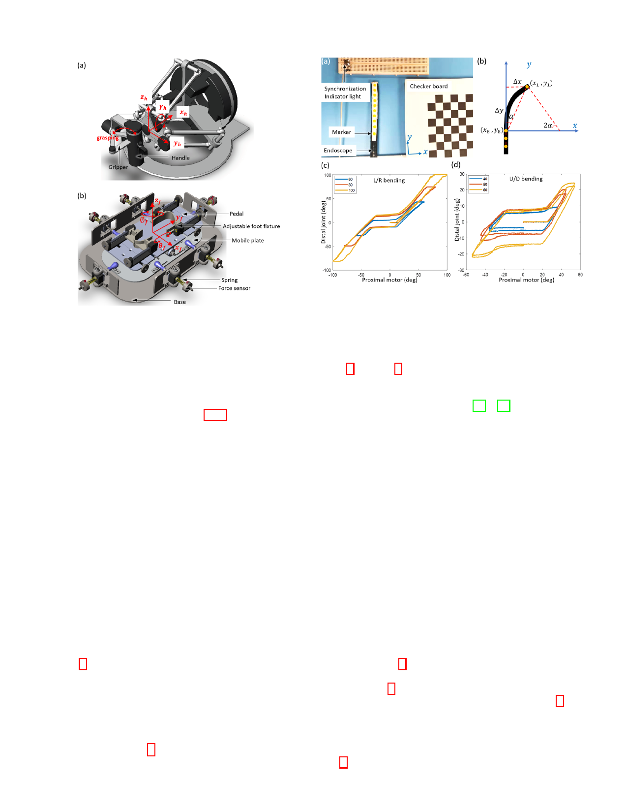

5
Fig. 5. Master interfaces with (a) hand interface and (b) foot interface.
IV. EXPERIMENT AND RESULTS
To understand the performance of the system, we firstly
investigated the characteristics of the system regarding the
manipulation of the endoscope using the foot-control method
and the hand-clutch method (section IV-A); then we recruited
six subjects to individually conduct an ex-vivo test to assess
the robotic system for three-tool operation, where foot control
was compared with hand clutch control. The foot manipulation
of the flexible endoscope in four DoFs is demonstrated in
supplementary video 1. A surgical task operation from one of
the participants is provided in the supplementary video 2.
A. Robotic endoscope manipulation
1) Cable driven endoscope study: Cable-driven mecha-
nisms have an inherent drawback of backlash, due to the
slacking and elongation of the cables, the friction at the joint,
etc. The robotic grasper and hook used an antagonistic system
of cables for each DoF with adjustable pretension to reduce
the backlash. In contrast, the endoscope used in the system has
low, non-adjustable pretension which leads to larger backlash
in the two bending DoFs.
We have studied the motion of the proximal and distal ends
of the endoscope in two bending DoFs using the setup shown
in Fig. 6a. Ten yellow markers were attached to the surface
of the endoscope bending section. The motion of ten yellow
markers was video-recorded by a 2D camera at a sampling
rate of 30 Hz. Then, the video was processed to get the planar
position of ten marker points using MATLAB. The points of
the marks were aligned at the initial static position. The first
and eighth points were chosen to calculate the bending angle
of the endoscope (Fig. 6b), with 2 arctan( x/ y). The two
rotation angles of the proximal motor and the distal tip of the
Fig. 6. Endoscope motion study (a) set up and (b) angle calculation.
Hysteresis profiles of the endoscope in (c) L/R direction and (d) U/D direction.
endoscope obtained from video were synchronized by using
the signal of the indicator light.
Fig. 6c and Fig. 6d depict the relationship between proximal
motor position and distal bending angle for the endoscope
when actuating each DoF individually. The hysteresis profile
is similar with the previous study [20], [29]. The proximal
motor rotated bidirectionally (recorded as positive to negative
angles) for two cycles in each level. There are non-linear areas,
especially in the middle of the profiles (about ± 20-25 ◦). At
this range, the pair of cables on both sides are slacking and
the distal tip does not move until the slacking is diminished.
The result of the dead zone range provided a reference to find
the zero position of the endoscope in the initialization of the
system. In addition, the operator could have more control over
the system through conscious of the states of the endoscope.
Our main purpose is to test the feasibility of the system. The
coupling study for 2-DoF motions is not conducted since it is
not our primary concern at current stage.
2) Foot control: The operator first steps the foot on the
pedal and adjusts the four foot-shape blocks to fit their foot
size. The pedal supports the leg against gravity to minimize
fatigue. The foot can drive the pedal and mobile plate move in
four DoFs. The motion signals from the foot are referenced for
the rotation of the proximal motors which drive the distal tip
of the endoscope through cables. Foot-manipulation with the
foot interface and corresponding movement of the endoscope
are shown in Fig. 7. Pressing/lifting the pedal activated by
toe up/down rotation control the up/down bending of the
endoscope (Fig. 7 a). The left-right rotation of the pedal is
linked with the left-right bending of the endoscope (Fig. 7 b).
The bending in combined DoF is allowed, e.g. lifting and
rotating left of the pedal could lead to up-left bending of
the endoscope. The left-right swing of the pedal, activated by
shank rotation around thigh, map the rotation of the endoscope
(Fig. 7 c). The forward-backward movement of pedal linked to